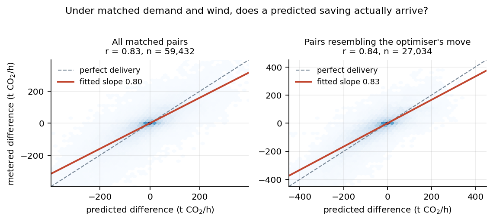
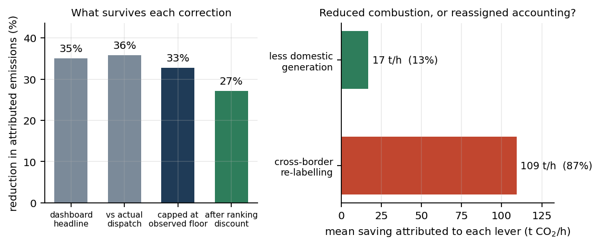
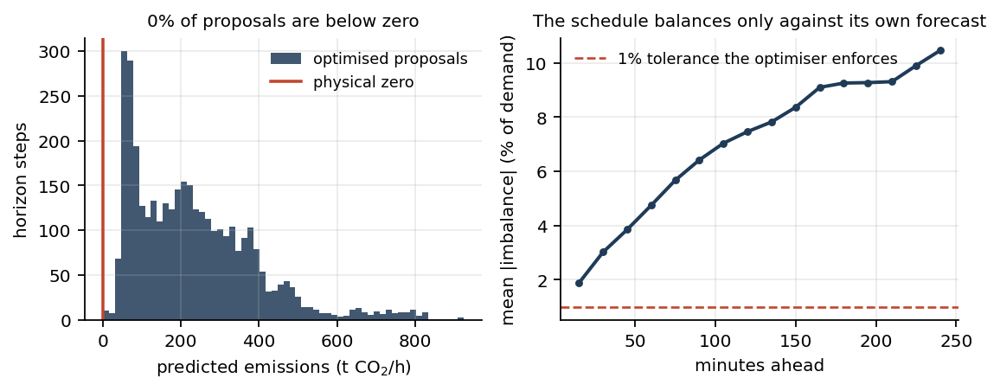

This project provides a solution framework for minimizing CO2 emission levels in a national power grid through machine learning methods. Data is collected via Energinet's public API, which provides real-time data about Denmark's power system. A monotone gradient-boosted ensemble infers the total emission rate implied by a dispatch, XGBoost regressors forecast demand and renewable production, and a genetic ensemble searches for the emission-minimizing four-hour trajectory.
The headline reduction is measured against the hold-current counterfactual: what emissions would be over the same four hours if demand and renewables follow their forecasts but the controllable resources stay exactly where they are. Comparing against the present measured value instead credits the optimiser with whatever the weather was going to do anyway. The historical backtest below is the evidence for how much of that headline survives contact with the dispatch that actually ran.
Fig 1: Measured CO2 intensity over the past twelve hours, the hold-current counterfactual over the coming four hours, and the optimised trajectory. The shaded band is the emissions model's own dispersion, not a confidence interval on the grid.
Fig 2: Scheduled power plant production and interconnector exchanges for each 15-minute step, with the forecast demand and renewables that condition them. Positive exchange values are imports, negative ones exports. Every row satisfies the national energy balance and every change between rows respects the resource's ramp limit.
Fig 3: The same schedule as a trajectory. Because a chromosome is the whole four-hour path rather than a single time point, consecutive steps are coupled by ramp constraints.
I. Inferring CO2 levels. A regression model infers CO2 levels from 12 features: renewable energy production (solar and wind), energy produced by power plants with installed capacity greater or equal to 100 MW, energy produced by power plants with installed capacity less than 100 MW, and the nine energy exchanges between Denmark and other countries or areas (DK1-DE, DK1-NL, DK1-GB, DK1-NO, DK1-SE, DK1-DK2, DK2-DE, DK2-SE, Bornholm-SE). It predicts total emissions rather than intensity, and it is constrained to be monotonically non-decreasing in every supply source — which is physically true under consumption-based accounting. Softplus on the ensemble output keeps predictions above zero. A companion tree reports the training support behind each prediction, a Mahalanobis score measures distance from anything ever observed, and a plausibility floor — the 5th percentile of metered outcomes under comparable demand and wind — stops the search proposing an emission rate the grid has never achieved.
II. Forecasting. XGBoost regressors provide multi-step forecasting for demand and renewable production over the next 16 steps, four hours ahead at the 15-minute resolution Denmark uses for imbalance settlement. Renewable production is not extrapolated from its own recent output — wind four hours out is not recoverable that way — but built on Energinet's own physical forecast, with a learned correction on top. Every model is evaluated chronologically against a persistence baseline.
III. Genetic optimisation. The optimal combination of sources is inferred using genetic algorithms. To escape local optima, this uses a genetic ensemble of 16 optimisers evaluated as an island model with periodic migration. A chromosome is an entire dispatch trajectory $X^{(j)} \in \mathbb{R}^{T \times d}$ with $d = 11$ genes per step and $T = 16$ steps, so the first generation is
$$G = \begin{bmatrix} - & \operatorname{vec}(X^{(1)}) & - \\ - & \operatorname{vec}(X^{(2)}) & - \\ & \vdots & \\ - & \operatorname{vec}(X^{(m)}) & - \end{bmatrix} \in \mathbb{R}^{m \times Td}$$
where $m$ is the size of the population. Each trajectory minimises
$$X^{*} = \underset{X^{(j)}}{\operatorname{argmin}} \; \frac{1}{T}\sum_{t=1}^{T} \Big[ \xi_b\,\mathcal{P}_b(x_t) + \xi_r\,\mathcal{P}_r(x_t, x_{t-1}) + \xi_s\,\mathcal{P}_s(x_t) + \xi_f\,\mathcal{P}_f(x_t) + \zeta\,\Theta(x_t) + \gamma\,\sigma(x_t) \Big]$$
where $\mathcal{P}_b$ is the grid imbalance penalty, built on the indicator function $\mathbf{I}\left(\left|D_{XG} - R_{XG} - \sum_{i \in \mathcal{B}} x_i\right| > 0.01\,D_{XG}\right)$ and scaled by the relative size of the violation so the heuristic has a gradient to descend; $\mathcal{P}_r$ is the ramp penalty between consecutive steps; $\mathcal{P}_s$ confines the search to the region where the emissions model has evidence; $\mathcal{P}_f$ is the plausibility-floor penalty, which refuses outcomes cleaner than the historical 5th percentile under the same demand and wind; $\Theta$ is the emissions level inferred by the regression ensemble, augmented by $\zeta$; and $\sigma$ is the model's own dispersion, augmented by $\gamma$. The sum runs only over the eight cross-border links $\mathcal{B}$: the DK1-DK2 link joins two Danish bidding zones, so it cannot change national supply.
Every candidate passes through a repair operator that enforces bounds, ramp limits and the energy balance by construction, so the search spends its effort on emissions rather than on rediscovering feasibility.
The live numbers above are what the emissions model says about a schedule it helped to choose. The backtest asks whether those claims survive contact with the dispatch that actually ran. The year is split into five expanding windows. In each fold the emissions model, both forecasters and the operating envelope are fitted only on data preceding the cutoff; 45 origins are then replayed at the deployed genetic-algorithm budget. That is 225 origins and 3,600 horizon steps between February and September 2026.

Fig 4: Under matched demand and wind, does a predicted saving arrive? When the model says one schedule is $X$ t/h cleaner, the meters deliver $0.80X$ on average, rising to $0.83X$ for moves that resemble the optimiser's own direction.

Fig 5: The 35% the pipeline would have reported, the 27% that remains after capping proposals at historically observed outcomes and discounting by the ranking slope, and the share of that saving that comes from running less domestic generation versus changing who Denmark imports from.

Fig 6: After the positivity transform, no proposal falls below zero. The schedule still only balances against its own forecast: under realised conditions the imbalance grows from 1.9% of demand at 15 minutes to 10.5% at four hours.
Chronological hold-out metrics for the models that produce the live schedule. The backtest above is the test of the whole stack.
Fig 7: Relationship between large-plant production, renewable energy, net cross-border exchange and CO2 intensity over the past 24 hours. The apparent link between thermal output and low emissions is confounded by wind, which is why the emissions model is constrained monotone in every supply source and predicts total emissions rather than intensity.